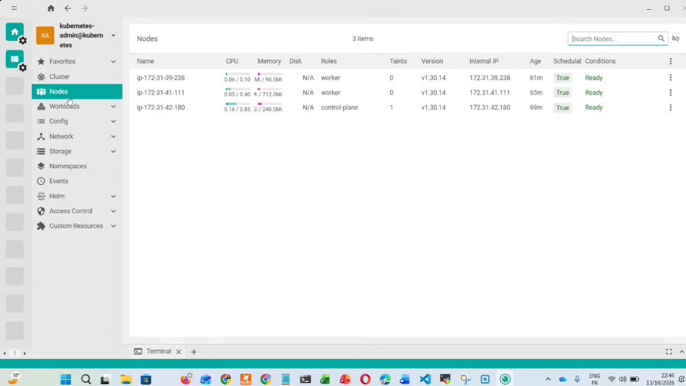

Atelier 06 : Exploitation, Observabilité & Reverse Debugging¶
Objectifs Pédagogiques :¶
- Lire les logs d'une application (
kubectl logsen direct, multi-pods, conteneur précédent) et la chronologie des événements du cluster. - Exécuter une commande dans un conteneur avec
kubectl execpour vérifier ce qu'il voit : sa configuration et son réseau. - Appliquer une méthode de dépannage, du général au détail, sur 3 incidents classiques :
CrashLoopBackOff,OOMKilledet Service sans réponse. - Détecter une panne du système d'un nœud avec Node Problem Detector et retirer ce nœud du service (
kubectl cordon). - Mesurer la consommation avec Metrics Server (
kubectl top), collecter métriques et logs avec Prometheus, Fluent Bit et Loki, et les consulter dans Grafana. - Situer cette pile par rapport aux services managés des clouds, dont StackDriver (aujourd'hui Google Cloud Observability).
Compatibilité OS
Les commandes de cet atelier sont rigoureusement identiques sous Windows (PowerShell), Linux (Ubuntu) et macOS (Terminal) : les manifests sont fournis en fichiers dans manifests/, npd/ et monitoring/. Quand une commande diffère, les deux variantes sont fournies.
Environnement : le cluster 3 nœuds (1 control plane + 2 workers) de l'Atelier 01
Node Problem Detector surveille les workers, et l'étape 3 de l'exercice 4 en retire un du service : réalisez ce lab sur ce cluster, piloté au choix :
- Option A (Recommandée - Confort DevOps Local) : depuis votre machine locale, avec votre
kubectlet votrekubeconfig. Dans chaque nouveau terminal, placé à la racine du dépôt, pointez d'abordkubectlvers le fichierkubeconfig.yamlrécupéré à l'étape 1 de l'exercice 4 de l'Atelier 01 :- Windows (PowerShell) :
$env:KUBECONFIG = "$PWD\labs\01-Installation-Cluster\terraform\kubeconfig.yaml" - Linux / macOS (Bash) :
export KUBECONFIG=$PWD/labs/01-Installation-Cluster/terraform/kubeconfig.yaml - Vérification :
kubectl get nodesdoit afficher les 3 nœuds à l'étatReady.
- Windows (PowerShell) :
- Option B (PC d'entreprise verrouillé) : en SSH sur
k8s-control: l'outillage et les manifests sont pré-installés dans~/labs/.
🛟 Secours : Minikube sur votre poste (session AWS indisponible), piloté forcément depuis votre poste comme en Option A. Remplacez k8s-worker-1 par minikube, y compris dans manifests/inject-kernel-err.yaml. Pour ouvrir Grafana (étape 3 de l'exercice 5), utilisez minikube service grafana -n monitoring --url.
Namespace de travail : campus-dev
Ce lab est indépendant des autres : son étape 0 crée campus-dev s'il n'existe pas encore, puis y installe ou met à jour tout ce dont il a besoin. Vous pouvez le réaliser sans avoir fait les labs précédents ; pour le recommencer à zéro, utilisez l'encadré « Repartir de zéro » de l'étape 0.
Contexte Métier¶
Le Campus Summer Portal est en production. L'administrateur doit trouver la cause d'une panne de pod ou de nœud, puis suivre en continu la consommation et les logs de tout le cluster. Il se pose trois questions ; on commence toujours par kubectl, puis on outille : historique, alertes, tableaux de bord.
| Question | Outils de base | Outils de supervision |
|---|---|---|
| Logs : que raconte l'application ? | kubectl logs, kubectl exec |
Fluent Bit + Loki |
| État : le nœud est-il sain ? | kubectl describe node, événements |
Node Problem Detector |
| Métriques : combien consomme-t-elle ? | kubectl top (Metrics Server) |
Prometheus + Grafana |
Mode d'emploi
- Les encadrés rouges « À vous de répondre » contiennent les questions. Pour les commandes déjà vues dans les labs précédents, on vous demande la commande au lieu de vous la donner : cherchez avec
kubectl --help,kubectl <commande> --helpoukubectl explain. - Les commandes nouvelles sont données.
- Les encadrés « Indice » sont repliés : cliquez dessus seulement si vous bloquez.
Étape 0 : Préparer l'environnement¶
Le dossier starter/ du lab installe l'application complète, dans l'état de fin de l'Atelier 07 (réalisé avant celui-ci) :
| Fichier | Contenu |
|---|---|
01-config.yaml |
Le ConfigMap campus-config (paramètres non sensibles de l'API). |
02-postgres.yaml |
Le PV pv-postgres, le PVC pvc-postgres, la base PostgreSQL persistante et son Service postgres. |
03-backend.yaml |
L'API campus-backend (2 réplicas, configuration lue dans le ConfigMap et le Secret, sondes de santé, conteneur non-root et ressources déclarées) et son Service campus-backend. |
04-frontend.yaml |
Le frontend et son Service NodePort campus-frontend-svc (port 30088). |
Les identifiants de la base ne sont pas versionnés dans le starter : vous créez le Secret campus-db-credentials par une commande, comme à l'Atelier 05.
Créez le namespace campus-dev s'il n'existe pas encore, sélectionnez-le, puis appliquez le starter. Si vous sortez du lab précédent, vos objets sont conservés et simplement mis à jour. Depuis la racine du dépôt (Option A) ou depuis ~ sur k8s-control (Option B : mettez d'abord le dépôt à jour avec git -C ~/formation pull, puis remplacez labs/ par ~/labs/) :
kubectl create namespace campus-dev --dry-run=client -o yaml | kubectl apply -f - # sans effet s'il existe déjà
kubectl config set-context --current --namespace=campus-dev
kubectl create secret generic campus-db-credentials --from-literal=POSTGRES_DB=campus --from-literal=POSTGRES_USER=campus --from-literal='POSTGRES_PASSWORD=CampusSecret2026!' --dry-run=client -o yaml | kubectl apply -f -
kubectl delete networkpolicy,resourcequota,limitrange --all # contraintes de l'Atelier 07 : elles bloqueraient les incidents simulés
kubectl apply -f "labs/06-Administration & Supervision/starter/"
kubectl rollout status deployment/campus-postgres --timeout=180s
kubectl rollout status deployment/campus-backend --timeout=300s
Environnement incohérent ou lab à recommencer ? Repartez de zéro
Supprimez le namespace et tout son contenu, puis relancez les commandes ci-dessus :
kubectl delete namespace campus-dev # ⚠️ supprime tout le contenu de campus-dev
kubectl delete pv pv-postgres --ignore-not-found # le PV n'appartient à aucun namespace
La suppression peut prendre jusqu'à une minute : kubectl rend la main quand elle est terminée.
kubectl delete affiche No resources found si vous n'avez pas fait l'Atelier 07 : c'est attendu. Le backend a des sondes de santé : rollout status rend la main quand Spring Boot a fini de démarrer (20 secondes à 2 minutes).
Placez-vous ensuite dans le dossier du lab, qui contient les fichiers manifests/, npd/ et monitoring/ utilisés plus loin : cd "labs/06-Administration & Supervision" (Option A) ou cd ~/"labs/06-Administration & Supervision" (Option B).
Lancez enfin dès maintenant la pile de supervision de l'exercice 5. Elle télécharge ses images et démarre pendant que vous faites les exercices 1 à 4 ; elle enregistrera aussi les logs des incidents de l'exercice 3. Inutile d'attendre : passez directement à l'exercice 1.
kubectl apply -f monitoring/00-namespace.yaml -f monitoring/01-metrics-server.yaml -f monitoring/02-loki.yaml -f monitoring/03-fluentbit.yaml -f monitoring/04-prometheus.yaml -f monitoring/05-grafana.yaml
Exercice 1 : Lire les logs et les événements¶
Ce que vous allez comprendre
Les logs sont les messages qu'une application écrit sur sa sortie standard ; Kubernetes les conserve pour chaque conteneur. Les événements retracent ce que le cluster a fait : placement d'un pod, téléchargement d'image, redémarrage, erreur.
Étape 1 : Lire les logs du backend¶
La première commande affiche les 20 dernières lignes (--tail=20), puis suit les nouvelles en direct (-f, follow) : quittez avec Ctrl + C. La seconde lit les logs de tous les pods portant l'étiquette app=campus-backend ; --prefix indique devant chaque ligne le pod d'où elle vient :
kubectl logs -f deployment/campus-backend --tail=20
kubectl logs -l app=campus-backend --tail=5 --prefix
À vous de répondre
- Quelle ligne indique que Spring Boot a fini de démarrer ? En combien de secondes ?
- Le Deployment a 2 pods : de combien de pods viennent les lignes de la première commande ? Et celles de la seconde ?
- Quelle option de
kubectl logslirait les logs du conteneur précédent, celui qui a planté ? (Vous l'avez vue à l'Atelier 03.)
Étape 2 : Lire la chronologie des événements¶
Les événements du namespace, triés par date de création :
À vous de répondre
- Quelles raisons (colonne
REASON) retrouvez-vous pour la création d'un pod, dans l'ordre ? - Les logs d'un pod supprimé sont-ils encore lisibles avec
kubectl logs? Que faut-il pour les conserver ?
Indice : des logs qui meurent avec le pod
Un pod crée successivement les événements Scheduled (placé sur un nœud), Pulled (image disponible), Created puis Started (conteneur lancé).
Les logs d'un pod meurent avec lui. En production, on les centralise hors du cluster : c'est le rôle de Fluent Bit et Loki (exercice 5).
Exercice 2 : Exécuter une commande dans un conteneur¶
Ce que vous allez comprendre
Quand les logs ne suffisent pas, on vérifie ce que voit le conteneur lui-même : sa configuration et son réseau. kubectl exec lance une commande dans un conteneur en cours d'exécution.
Étape 1 : Vérifier la configuration reçue par le backend¶
Vous avez utilisé kubectl exec à l'Atelier 02. Vous voulez exécuter env | grep SPRING dans un pod du Deployment campus-backend.
À vous de répondre
- Quelle commande exécute
env | grep SPRINGdans le backend ? - Quelle URL de base de données l'application a-t-elle reçue ?
- La variable
SPRING_DATASOURCE_PASSWORDs'affiche-t-elle en clair ? Qu'en concluez-vous sur les droitsexec?
Indice : une commande avec un « | » dans le conteneur
Tout ce qui suit -- s'exécute dans le conteneur. Le | serait interprété par votre terminal : encapsulez la commande dans sh -c "…", comme pour cat /etc/hosts à l'Atelier 02. On peut viser le Deployment directement (deployment/campus-backend) : kubectl choisit l'un de ses pods.
Étape 2 : Vérifier le réseau vu du frontend¶
wget -qO- télécharge une page et l'affiche, sans autre message :
À vous de répondre
- Que répond l'API ? Le frontend joint-il le backend ?
- Par quel nom le frontend joint-il le backend ? Sur quel objet repose ce nom (Atelier 04) ?
exec sert à observer, pas à corriger
Toute modification faite dans le conteneur disparaît au prochain redémarrage du pod : on corrige le manifest, jamais le conteneur en direct. Pour un terminal interactif : kubectl exec -it deployment/campus-frontend -- sh (quittez avec exit).
Exercice 3 : Dépanner avec méthode¶
Ce que vous allez comprendre
Face à un incident, on suit toujours le même ordre, du général au détail. Le statut du pod oriente vers le bon outil.
| Étape | Commande | Ce que vous cherchez |
|---|---|---|
| 1. Voir | kubectl get pods -o wide |
STATUS, RESTARTS, NODE |
| 2. Comprendre | kubectl describe pod <pod> |
Les Events (placement, image) et le Last State du conteneur |
| 3. Lire | kubectl logs <pod> --previous |
L'erreur écrite par l'application |
| 4. Entrer | kubectl exec <pod> -- … |
La configuration et le réseau vus du pod |
| 5. Élargir | kubectl describe node, kubectl top |
Le nœud, les ressources |
Étape 1 : Incidents A et B, deux pods qui redémarrent en boucle¶
Vous lancez deux pods défaillants en même temps et les observez ensemble (Ctrl + C pour quitter) :
- Incident A,
crash-app: l'imagebusyboxexécute un script qui affiche deux messages puis s'arrête avec le code d'erreur 42 ; - Incident B,
oom-victim(manifests/oom-victim.yaml) : un conteneur limité à 50 Mi de mémoire (limits.memory) tente d'en allouer 150 Mo.
kubectl run crash-app --image=busybox:1.36 -- sh -c "echo Demarrage; sleep 3; echo Erreur fatale; exit 42"
kubectl apply -f manifests/oom-victim.yaml
kubectl get pods crash-app oom-victim -w
Au bout d'une minute environ, les deux pods affichent CrashLoopBackOff : ils redémarrent en boucle, mais pas pour la même raison.
À vous de répondre
- Par quels statuts passe chaque pod ? Que fait la colonne
RESTARTS? - Quelle commande affiche la section
Last Statedu conteneur d'un pod ? Pour chacun des deux pods, quelsReasonetExit Codey lisez-vous ? - Que signifie un
Exit Codedifférent de 0 ? Qui a tué le processus deoom-victim? - Quelle commande affiche le message écrit par le conteneur de
crash-appqui a planté ? Quel est ce message ? - Proposez deux corrections possibles pour
oom-victim. - Supprimez les deux pods. Vous retrouverez les logs de
crash-appà l'exercice 5, après sa suppression.
Indice : logs --previous ne répond pas
Si la commande répond unable to retrieve container logs, le pod est dans le court état Error, entre deux redémarrages : relancez-la quand il affiche CrashLoopBackOff. Le délai entre deux redémarrages double à chaque échec (10 s, 20 s, 40 s… jusqu'à 5 minutes).
Étape 2 : Incident C, un Service sans réponse¶
Un collègue a créé un Service campus-api pour le backend. Créez-le, puis interrogez-le depuis un pod de test :
kubectl create service clusterip campus-api --tcp=8080:8080
kubectl run test-api --image=curlimages/curl:8.11.1 --rm -i --restart=Never -- curl -s -m 5 http://campus-api:8080/actuator/health
kubectl affiche pod campus-dev/test-api terminated (Error) : aucune réponse. Le Service existe pourtant.
À vous de répondre
- Quel est le réflexe « Service muet ? » vu à l'Atelier 04 ? Que renvoie-t-il ici ?
- Comparez le sélecteur du Service (
kubectl describe service campus-api) et les labels des pods backend (kubectl get pods -l app=campus-backend --show-labels). Où est l'erreur ? - Corrigez le sélecteur avec la commande ci-dessous, puis relancez le pod de test : que répond maintenant l'API ?
Supprimez ensuite le Service : kubectl delete service campus-api.
Exercice 4 : Détecter une panne de nœud¶
Ce que vous allez comprendre
Le kubelet ne surveille que la mémoire, le disque et le nombre de processus du nœud. Un blocage du noyau Linux ne rend pas le nœud NotReady : le scheduler continue d'y envoyer des pods. Node Problem Detector (NPD) lit les journaux système de chaque nœud et signale ces pannes dans les conditions du nœud. NPD détecte ; c'est l'administrateur qui retire le nœud du service.
Étape 1 : Déployer Node Problem Detector¶
NPD tourne en DaemonSet : un controller qui place un pod sur chaque nœud.
kubectl apply -f npd/npd.yaml
kubectl rollout status daemonset/node-problem-detector -n kube-system
kubectl get pods -n kube-system -l app=node-problem-detector -o wide
À vous de répondre
- Combien de pods NPD voyez-vous, et sur quels nœuds ? Pourquoi aucun sur
k8s-control? - Quelle commande affiche la description du nœud
k8s-worker-1? Dans sa sectionConditions, quelles conditions NPD a-t-il ajoutées, et avec quelle valeur ?
Indice : les nouvelles conditions n'apparaissent pas
NPD publie ses conditions quelques secondes après son démarrage : relancez la commande. Le control plane porte une taint (node-role.kubernetes.io/control-plane) qui refuse les pods ordinaires.
Étape 2 : Simuler une erreur du noyau sur k8s-worker-1¶
manifests/inject-kernel-err.yaml lance un pod privilégié (accès complet au nœud, réservé à cette simulation) qui écrit une fausse erreur dans le journal du noyau. NPD classe cette erreur en KernelDeadlock. kubectl wait attend que le pod ait terminé son écriture (statut Succeeded) avant de lire les événements :
kubectl apply -f manifests/inject-kernel-err.yaml
kubectl wait --for=jsonpath='{.status.phase}'=Succeeded pod/inject-kernel-err --timeout=60s
kubectl get events -A --field-selector reason=KernelDeadlock
kubectl delete pod inject-kernel-err
Si get events ne renvoie rien, attendez quelques secondes et relancez-la : NPD lit le journal du noyau en continu.
À vous de répondre
- Relisez les conditions de
k8s-worker-1: quelle condition est passée àTrue? - Le nœud est-il toujours
Ready? Pourquoi est-ce dangereux pour les prochains pods ?
Pod privilégié
Un pod privilégié a tous les pouvoirs sur le nœud : il n'est utilisé ici que pour la simulation. Les conteneurs de l'application, eux, tournent sans privilèges : le starter du backend déclare un securityContext (pas de root, pas d'élévation de privilèges).
Étape 3 : Retirer le nœud du service¶
kubectl cordon marque un nœud comme non planifiable, sans toucher aux pods qui y tournent ; kubectl uncordon le remet en service :
À vous de répondre
- Quel statut affiche
k8s-worker-1aprèscordon? - Les pods qui tournaient déjà sur ce nœud ont-ils été déplacés ?
- Avant une réparation, quelle commande viderait le nœud de ses pods (voir l'encadré ci-dessous) ?
cordon ou drain ?
cordon bloque l'arrivée de nouveaux pods. kubectl drain k8s-worker-1 --ignore-daemonsets fait un cordon, puis déplace les pods du nœud vers les autres nœuds : c'est la commande d'une maintenance. Nous ne la lançons pas ici pour ne pas déplacer la base de données, dont le volume est sur le disque du nœud (Atelier 05).
Exercice 5 : Mesurer la consommation et centraliser les logs¶
Ce que vous allez comprendre
Pour suivre un cluster en continu, il faut collecter régulièrement les métriques (mémoire, CPU…) et les logs de tous les conteneurs, les conserver, et pouvoir les consulter après coup. C'est le rôle d'une pile de supervision.
| Outil | Rôle |
|---|---|
| Metrics Server | Mesure la consommation actuelle des nœuds et des pods, sans historique : c'est elle qu'affiche kubectl top. Pas installé par défaut avec kubeadm. |
| Prometheus | Interroge régulièrement les nœuds et conserve les métriques dans le temps. |
| Fluent Bit | Agent présent sur chaque nœud (DaemonSet) : lit les logs des conteneurs et les envoie à Loki. |
| Loki | Stocke les logs et les classe par labels (pod, namespace, application). |
| Grafana | Interface web qui interroge Prometheus et Loki. |
Étape 1 : Vérifier la pile de supervision¶
Vous avez lancé la pile à l'étape 0 : elle tourne depuis le début du lab. Tous les outils sont placés dans le namespace monitoring, sauf Metrics Server, qui rejoint les composants système dans kube-system :
À vous de répondre
- Tous les pods sont-ils
Running? Quel objet Kubernetes a créé les podsfluent-bit? - Combien de pods
fluent-bitvoyez-vous ? NPD (exercice 4) n'en a que 2 : pourquoi Fluent Bit en a-t-il un de plus ?
Indice : aucun pod dans monitoring
Vous avez sauté la dernière commande de l'étape 0 : lancez-la maintenant et attendez que les pods soient Running (1 à 2 minutes). Fluent Bit ne collecte que les lignes écrites après son démarrage : rejouez l'incident A (étape 1 de l'exercice 3) pour avoir des logs à retrouver à l'étape 3.
Étape 2 : Mesurer la consommation¶
Metrics Server relève les mesures toutes les 15 à 60 secondes : s'il vient de démarrer, kubectl top répond metrics not available yet. Attendez une minute et relancez.
À vous de répondre
- Dans quelles unités s'affichent le CPU et la mémoire ? Que vaut
250m? - Quel pod de
campus-devconsomme le plus de mémoire ? - Ces valeurs sont-elles celles déclarées dans les manifests, ou la consommation réelle ?
Étape 3 : Consulter métriques et logs dans Grafana¶
Ouvrez http://<IP_PUBLIQUE_D_UN_WORKER>:30300 et connectez-vous avec admin / admin2026. Grafana est déjà relié à Prometheus et à Loki. Ouvrez le menu Explore, puis :
-
choisissez la source Prometheus et exécutez cette requête, qui additionne la mémoire utilisée par les conteneurs de
campus-dev, pod par pod : -
rechargez deux ou trois fois le portail (
http://<IP_PUBLIQUE_D_UN_WORKER>:30088), puis choisissez la source Loki et exécutez cette requête, qui sélectionne les logs des pods portant le labelapp=campus-frontend(le journal des accès du serveur Nginx) : -
toujours dans Loki, exécutez cette requête, qui sélectionne les logs du pod
crash-appde l'incident A (kubectl runlui a posé le labelrun=crash-app) :
À vous de répondre
- Combien de courbes affiche la requête Prometheus ? Retrouvez-vous l'ordre de grandeur de
kubectl top pods? - Dans Loki, retrouvez-vous vos rechargements du portail ? Et les messages
DemarrageetErreur fataledecrash-app? Ce pod a été supprimé à l'exercice 3 : pourquoikubectl logs crash-appne peut-il plus les afficher ?
Indice : Grafana ne s'affiche pas
- Utilisez l'IP publique d'un worker ; elle change à chaque redémarrage de la session AWS.
- Si le port 30300 est filtré par votre réseau d'entreprise (Option A) :
kubectl port-forward svc/grafana 3000:3000 -n monitoring, puishttp://localhost:3000. - Loki vide : Fluent Bit ne collecte que les logs écrits après son démarrage (étape 0). Élargissez la période en haut à droite (Last 15 minutes → Last 1 hour).
StackDriver et les clouds
Sur un cluster managé, cette pile est fournie par le cloud. Chez Google, ce service s'appelait StackDriver ; il se nomme aujourd'hui Google Cloud Observability (Cloud Logging pour les logs, Cloud Monitoring pour les métriques) et il est activé par défaut sur GKE. Les équivalents sont CloudWatch chez AWS et Azure Monitor chez Microsoft. Les principes sont les mêmes : un agent par nœud collecte logs et métriques, une interface les interroge.
Pour aller plus loin (optionnel, ~5 min) : superviser le cluster avec FreeLens
FreeLens est un IDE graphique installé sur votre poste, qui montre en direct l'état des objets du cluster, sans rien installer dans le cluster. C'est le fork communautaire libre de Lens/OpenLens.
- Installez FreeLens (Windows, macOS ou Linux) depuis freelensapp.github.io.
- Catalog → Clusters → Add from Kubeconfig, puis sélectionnez le fichier
kubeconfig.yamlpréparé à l'Atelier 01. - Ouvrez le cluster : rejouez l'incident A (étape 1 de l'exercice 3) et observez le pod changer d'état dans Workloads → Pods.

FreeLens lit les métriques de Metrics Server : sans lui, les graphiques de consommation restent vides. En Option B, FreeLens doit joindre le port 6443 du cluster depuis votre poste : sans cet accès, contentez-vous de Grafana.
Critères de Validation (Checklist)¶
- Vous savez lire les logs d'un pod en direct, ceux de tous les pods d'une étiquette (
--prefix) et ceux du conteneur précédent (--previous). - Vous avez vérifié avec
kubectl execla configuration reçue par le backend (env) et le réseau vu du frontend (wgetverscampus-backend). - Vous avez diagnostiqué
CrashLoopBackOff(Exit Code),OOMKilled(Reason) et un Service sans réponse (Endpoints vides), en suivant la méthode get → describe → logs → exec → nœud. - Vous avez déployé Node Problem Detector, constaté la condition
KernelDeadlock=Trueet retiré le nœud du service aveckubectl cordon, puis l'avez remis en service. -
kubectl top nodesetkubectl top podsaffichent la consommation (Metrics Server). - Vous avez retrouvé dans Grafana la mémoire des pods (Prometheus), les accès au frontend et les logs du pod supprimé
crash-app(Loki). - Vous savez citer l'équivalent managé de cette pile chez Google (StackDriver, aujourd'hui Google Cloud Observability), AWS et Azure.